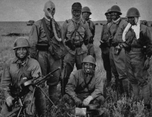
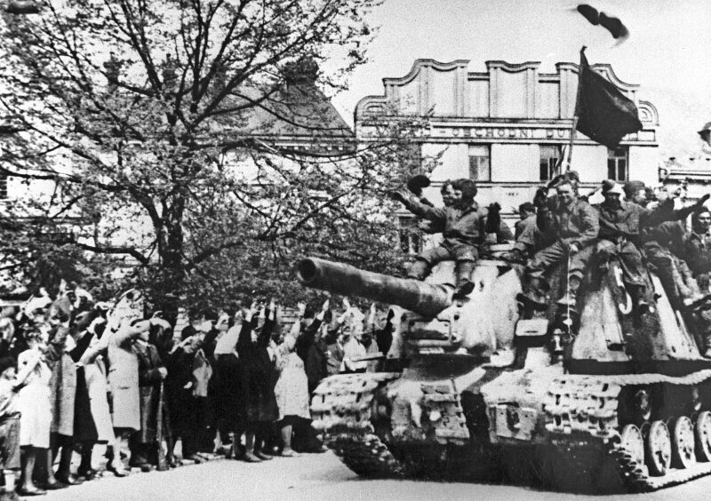
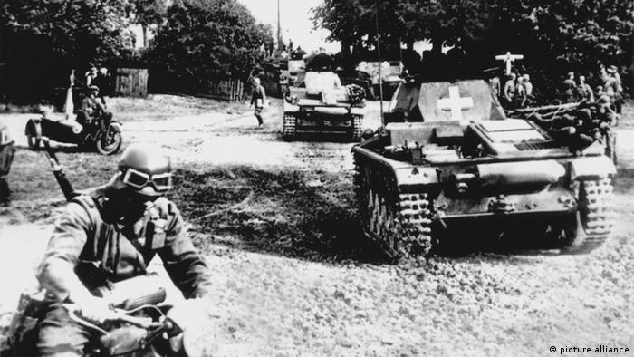
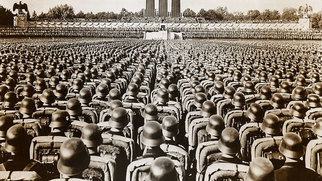
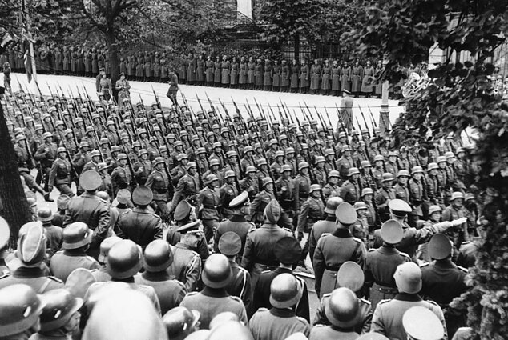

Al Doilea Război Mondial a fost un război global care a durat din 1939 până în 1945, deși unele conflicte asociate lui au început și mai devreme. El a implicat marea majoritate a țărilor lumii—inclusiv toate marile puteri—care au format două alianțe militare opuse: Aliații și Axa. A fost cel mai întins război din istorie, și a implicat direct mai mult de 100 de milioane de oameni din peste 30 de țări. Cei mai importanți participanți și-au dedicat întreaga capabilitate economică, industrială și științifică efortului de război, într-o stare de „război total”, ștergând distincția între resursele civile și cele militare. Marcat de moartea masivă a civililor, inclusiv de Holocaust (în care au fost uciși aproximativ 11 milioane de oameni) și de bombardamentele strategice ale centrelor industriale și demografice (în care au murit aproximativ un milion de oameni, și în cadrul cărora s-au distins bombardamentele atomice de la Hiroshima și Nagasaki),el a dus la între 50 și 85 de milioane de decese, mai mult decât orice alt conflict din istoria omenirii.
Imperiul Japonez avea ca obiectiv dominația asupra Asiei și Pacificului și era deja în război cu Republica China în 1937, dar în general se consideră că războiul mondial a început pe 1 septembrie 1939 cu invazia Poloniei de către Germania Nazistă și, ulterior, cu declarațiile de război ale Germaniei, Franței și Regatului Unit. De la sfârșitul anului 1939 până la începutul anului 1941, într-o serie de campanii și tratate, Germania a cucerit sau controlat o mare parte din Europa continentală, și a format Axa Roma-Berlin-Tokyo împreună cu Italia și Japonia. Conform Pactului Molotov–Ribbentrop din 23 august 1939, Germania și Uniunea Sovietică au divizat anexat teritoriile vecinilor lor europeni, Polonia, Finlanda, România și Statele Baltice. Războiul a continuat în primul rând între puterile europene ale Axei și coaliția între Regatul Unit și Commonwealth-ul Britanic, cu campanii inclusiv în Africa de Nord și Africa de Est, cu bătălia aeriană a Marii Britanii, campania de bombardamente Blitz, campania din Balcani precum și cu îndelungata bătălie a Atlanticului. În iunie 1941, puterile europene ale Axei au lansat o invazie a Uniunii Sovietice, deschizând cel mai mare teatru de război din istorie, care a angajat cea mai mare parte a forțelor militare ale Axei într-un război de uzură. În decembrie 1941, Japonia a atacat Statele Unite ale Americii și coloniile europene din Oceanul Pacific, și a cucerit rapid o mare parte a Pacificului de Vest.
Înaintarea Axei s-a oprit în 1942, când Japonia a pierdut critica bătălie de la Midway, în apropiere de Hawaii, iar Germania a fost învinsă în Africa de Nord și apoi, în mod decisiv, la Stalingrad, în Uniunea Sovietică. În 1943, după o serie de înfrângeri germane pe Frontul de Est, invaziile aliate a Siciliei și a Italiei care au condus la capitularea Italiei, și victorile aliate în Pacific, Axa a pierdut inițiativa și s-a angajat într-o retragere strategică pe toate fronturile. În 1944, Aliații au invadat Franța ocupată de Germania, în timp ce Uniunea Sovietică și-a recăpătat toate pierderile teritoriale și a invadat Germania și aliații săi. În 1944 și 1945, japonezii au suferit pierderi majore în Asia continentală în China Central-Sudică, și Birmania, în timp ce Aliații au schilodit Marina Japoneză și au capturat insule-cheie din Pacificul de Vest.
Războiul din Europa s-a încheiat cu o invazie a Germaniei de către Aliații Occidentali și Uniunea Sovietică, care a culminat cu capturarea Berlinului de către trupele sovietice și ulterior capitularea necondiționată a Germaniei la 8 mai 1945. După Declarația de la Potsdam dată de către Aliați la 26 iulie 1945 și după refuzul Japoniei de a capitula în conformitate cu termenii acesteia, Statele Unite ale Americii au detonat bombe atomice deasupra orașelor japoneze Hiroshima și Nagasaki, la 6 și, respectiv, 9 august. Cum o invazie de arhipelagului Japonez(d) era iminentă, și erau posibile și alte bombardamente atomice, iar Uniunea Sovietică a declarat război Japoniei(d) și a invadat Manciuria, Japonia a capitulat și ea la 15 august 1945. Astfel s-a încheiat războiul în Asia, cimentând o victorie totală a Aliaților.
Pierderi:
- militari morți:peste 24.000.000
- civili morți:peste 49.000.000
- total:peste 73.000.000
Cronologie
Începutul războiului în Europa este în general considerat a fi ziua de 1 septembrie 1939,începutul invaziei germane a Poloniei; Regatul Unit și Franța au declarat război Germaniei două zile mai târziu. Data de început a războiului în Pacific este uneori dată ca fiind cea a izbucnirii celui de al Doilea Război Sino-Japonez la 7 iulie 1937,sau chiar invazia japoneză a Manciuriei din 19 septembrie 1931.Alții îl urmează pe istoricul britanic A.J.P. Taylor, care considera că Războiul Sino-Japonez și războiul din Europa și din coloniile sale au fost două războaie diferite simultane, care au fuzionat în 1941. Acest articol folosește datarea convențională. O altă dată de începere a celui de al Doilea Război Mondial avansată de alți istorici este invazia italiană a Abisiniei la 3 octombrie 1935. Istoricul Britanic Antony Beevor consideră începutul celui de al Doilea Război Mondial a fi luptele de la Halhin Gol între Japonia și forțele de Mongoliei și Uniunii Sovietice din perioada mai-septembrie 1939.Nici data exactă a sfârșitului războiului nu este unanim convenită. În general se acceptă ideea că războiul s-a încheiat odată cu armistițiul din 14 august 1945, și nu cu capitularea formală a Japoniei (2 septembrie 1945). Un tratat de pace cu Japonia a fost semnat în 1951 pentru a încheia formal unele chestiuni cum ar fi despăgubirile ce trebuie plătite prizonierilor de război ai Aliaților, care au căzut victime ale atrocităților.Un tratat privind viitorul Germaniei a permis reunificarea Germaniilor de Est și de Vest în 1990 și a rezolvat și alte probleme postbelice.
Contribuţie
Istoricul rus Valentin Falin a spus-o astfel: „În ciuda faptului că politicienii au luat adesea poziții diametral opuse în ceea ce privește al doilea front și operațiunile comune, militarii și-au îndeplinit cu onestitate datoria. Datorită cooperării armatei din Vest și Est, războiul s-a încheiat în mai 1945 și nu a durat câțiva ani. După cum notează profesorul britanic Richard Overy, profesor de istorie modernă la King's College și autor al mai multor lucrări despre al Doilea Război Mondial, după război, fostul ministru de externe al lui Hitler, Joachim von Ribbentrop, a menționat trei motive principale pentru înfrângerea Germaniei:
- rezistență sovietică neașteptat de încăpățânată;
- livrări pe scară largă de arme și echipamente din Statele Unite;
- succesele Aliaților Occidentali în lupta pentru supremația aeriană.